Science & Justice
Forensic Science &
Criminology
-
Maes, E., Mine, B. & Jeuniaux, P., Sarief, S., Huynen, P., & Robert, L. (forthcoming). SIDIS-Griffie databank. Technical report. National Institute for Criminalistics and Criminology, Operational Directorate Criminology. https://incc.fgov.be
-
Huynen, P. & Jeuniaux, P., Mine, B., Maes, E., & Robert, L. (forthcoming). La base de données du Casier judiciaire central. Technical report. National Institute for Criminalistics and Criminology, Operational Directorate Criminology. https://incc.fgov.be
-
Remacle, C., Detry, I., Mine, B. & Jeuniaux, P. (2023). Les parcours socio-judiciaires des returnees en Belgique : état des lieux des acteurs impliqués et des procédures mises en place. Technical report #55. National Institute for Criminalistics and Criminology, Operational Directorate Criminology. https://incc.fgov.be
Translation in Dutch:
Remacle, C., Detry, I., Mine, B. & Jeuniaux, P. (2023). De sociaaljuridische trajecten van terugkeerders in België : stand van zaken van de betrokkene actoren en van de bestaande procedures. Technical report #55. National Institute for Criminalistics and Criminology, Operational Directorate Criminology. https://incc.fgov.be
-
Mine, B., Jonckheere, A., Detry, I. & Jeuniaux, P. (2022). Des dossiers (pas) comme les autres. L’accompagnement socio-judiciaire des dossiers de terrorisme en Belgique francophone. Champ pénal, 27. https://doi.org/10.4000/champpenal.13583.
Translation in English:
-
Mine, B., Jonckheere, A., Detry, I. & Jeuniaux, P. (2022). Cases (Un)like Any Other. The Socio-Judicial Follow-up of Terrorism Cases in French-Speaking Belgium. Penal field, 27. https://doi.org/10.4000/champpenal.13658.
-
Jeuniaux, P., Mine, B. & Detry, I. (2022). Le développement d’une base de données intégrée pour l’étude des trajectoires pénales des radicaux. Technical report #53. National Institute for Criminalistics and Criminology, Operational Directorate Criminology. https://incc.fgov.be
-
Mine, B., Jeuniaux, P. & Detry, I. (2022). La radicalité verbalisée. Analyse du discours de personnes radicales à propos de leur engagement et de leur(s) expérience(s) avec les autorités. Technical report #50. National Institute for Criminalistics and Criminology, Operational Directorate Criminology. https://incc.fgov.be
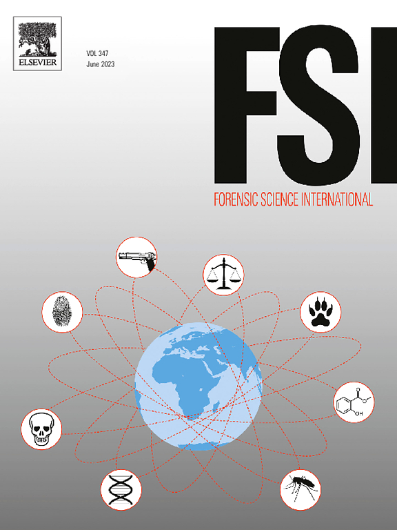
-
Lavergne, L., Boivin, R., Baechler, S., Jeuniaux, P., Fiola, K., Séguin, D., Lefebvre, J.-F., & Milot, E. (2021). Determining the impact of unknown individuals in criminality using network analysis of DNA matches. Forensic Science International, 111142. https://doi.org/10.1016/j.forsciint.2021.111142.
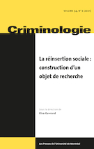
-
Jonckheere, A., Mine, B., Detry, I. & Jeuniaux, P. (2021). Travail social en justice et terrorisme. La gestion de l'information par les agents de probation. Criminologie, 54.2, 321-345 https://doi.org/10.7202/1084299ar.
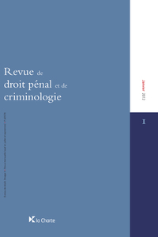
-
Mine, B., Jeuniaux, P., & Detry, I. (2021). Description et mise en perspective des données de police administrative relatives aux personnes, groupements et phénomènes à suivre. Revue de Droit Pénal et de Criminologie, 2021.6, 608-633.
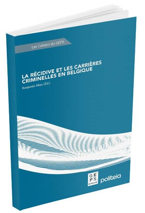
-
Mine, B., Jeuniaux, P. & Detry, I. (2021). La récidive et les carrières criminelles des personnes condamnées pour terrorisme en Belgique In Mine, B. (Ed.). La récidive et les carrières criminelles en Belgique. Politea. 117-160. https://politeia.be
-
Detry, I., Mine, B., & Jeuniaux, P. (2021). La radicalisation au prisme des banques de données. Technical report #47. National Institute for Criminalistics and Criminology, Operational Directorate Criminology. https://incc.fgov.be
Translation in Dutch:
Detry, I., Mine, B., & Jeuniaux, P. (2021). Radicalisering vanuit de invalshoek van databanken. Technical report #47. National Institute for Criminalistics and Criminology, Operational Directorate Criminology. https://incc.fgov.be

-
Detry, I., Mine, B., & Jeuniaux, P. (2020). Les Banques de Données Communes dans la lutte contre le terrorisme et l’extrémisme (potentiellement) violent. Revue du Droit des Technologies de l’Information, 80.3, 47-75.
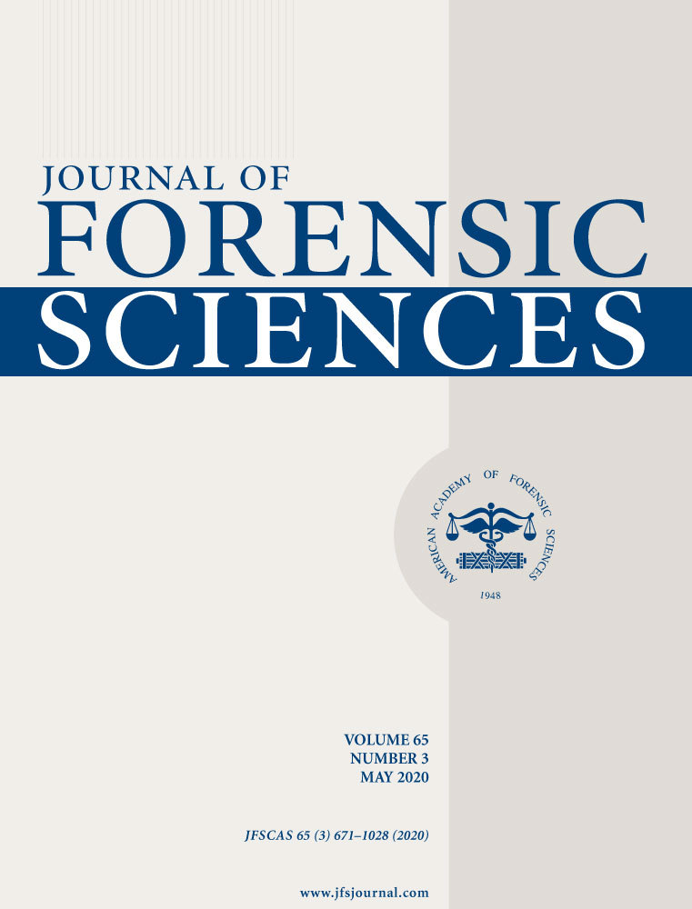
-
Zorbo, S. & Jeuniaux, P.P.J.M.H. (2020). DNA recovery from tape-lifting kits: methodology and practice. Journal of Forensic Sciences, 65.2, 641-648 https://doi.org/10.1111/1556-4029.14215.
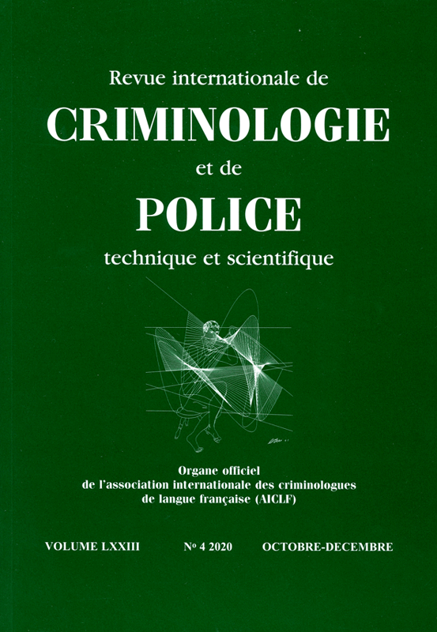
-
Detry, I., Mine, B., & Jeuniaux, P. (2019). Revue des études empiriques concernant la radicalisation et la justice. Revue internationale de criminologie et de police technique et scientifique, LXXII.3, 280-292.
-
Jeuniaux, P.P.J.M.H., De Moor, S., Robert, L., Renard, B., Stappers, C. & Vanvooren, V. (2018). Reconstruction and study of offending trajectories through forensic evidence: an illustration using a forensic DNA database. In Q. Rossy, D. Décary-Hétu, O. Delémont, & M. Mulone (Eds). The Routledge International Handbook of Forensic Intelligence and Criminology. https://www.routledge.com
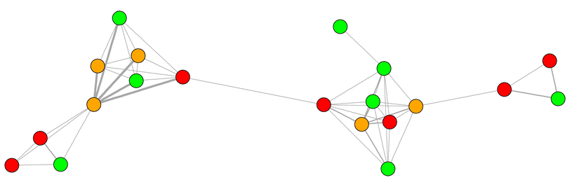
-
Jeuniaux, P.P.J.M.H., Duboccage, L., Renard, B., Van Renterghem, P. & Vanvooren, V. (2016). Establishing networks in a forensic DNA database to gain operational and strategic intelligence. Security Journal, 29(4), 584–602. http://doi.org/10.1057/sj.2015.31 (Full-access/view-only: http://rdcu.be/kxyW).
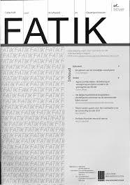
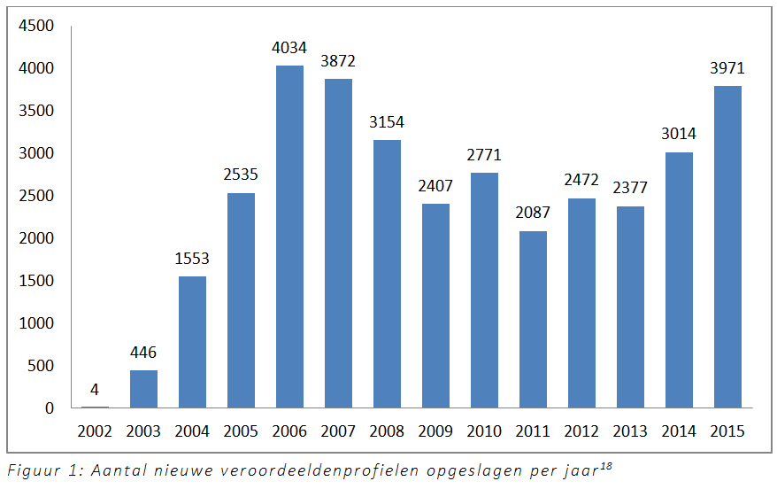
-
Stappers, C., De Moor, S., Gallala, I., Jeuniaux, P. P. J. M. H., Vanvooren, V., and Renard, B. (2016). DNA-databank veroordeelden: ethische kwesties en juridische keuzes. FATIK – Tijdschrift voor Strafbeleid en Gevangeniswezen, 149:5–11.
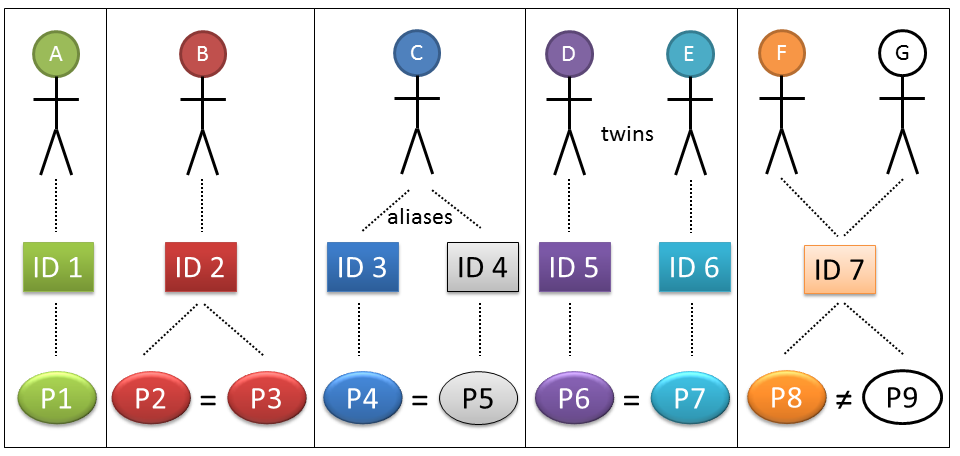
-
Jeuniaux, P.P.J.M.H., Renard, B., Duboccage, L., Steuve, S., Stappers, C., Gallala, I., De Moor, S., Jonckheere, A., Mine, B., De Greef, C., Vanhooydonck, B., Kempenaers, M., Van Renterghem, P., & Vanvooren, V. (2015). Managing forensic DNA records in a divided world: the Belgian case. Records Management Journal, 25(3), 269-287. http://doi.org/10.1108/RMJ-05-2015-0018.
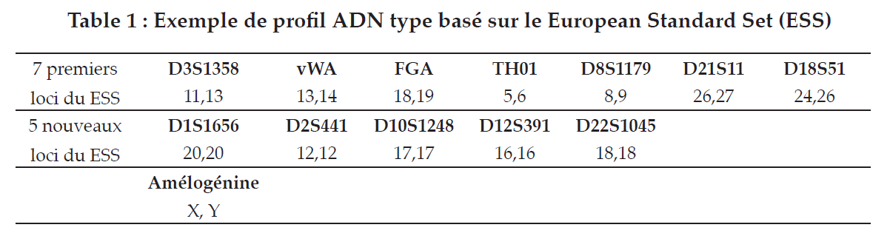
-
Renard, B., Duboccage, L., Jeuniaux, P., & Vanvooren, V. (November 2013). Les banques nationales de données génétiques en Belgique. Un premier bilan de 10 ans d'activité. Revue de Droit Pénal et de Criminologie, 2013(11), 927-961. https://www.jurisquare.be
-
Jeuniaux, P. & Renard, B. (2012). Les coûts de l'ADN : Les dépenses en matière d'expertises génétiques dans le système pénal belge, de 2000 à 2010. Technical report #29. National Institute for Criminalistics and Criminology, Operational Directorate Criminology. https://incc.fgov.be
— 21 July 2023